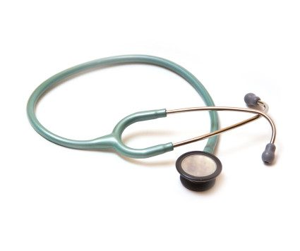

Allgemeinmedizin & Therapieansätze
In meiner ärztlichen Allgemeinpraxis kann alles zur Sprache kommen, was Ihnen in gesundheitlicher Hinsicht am Herzen liegt.
Als Human-Medizinerin wende ich mich jedem Menschen in jeder Lebenslage und jedem Alter zu. Ich bin offen für alle Fragen. Gemeinsam betrachten wir Ihre Situation, fragen nach möglichen Ursachen, suchen nach konkreten Lösungen und wählen den Ansatz der körperlich medizinischen Behandlung.
Das Behandlungsangebot im Überblick
- Umfassende ärztliche Untersuchung, Puls- und Ohrdiagnose
- Klassische Homöopathie – Akuterkrankungen, bewährte Indikationen, chronische Krankheiten, Regulationsstörungen
- Ohr-Akupunktur – Schmerztherapie, Allergiebehandlung, Immunstimulation, Systemerkrankungen, Regulationsunterstützung
- Blütenessenzen – medizinische und therapeutische Krisenintervention
- Mikrobiologische Therapie und Darmbehandlungen – Allergiebehandlung, Hauterkrankung, Immunstimulation, Entgiftung
- Metabolic Balance – einfache Ernährungsumstellung zur Gewichtsreduktion und Stoffwechselregulierung, Gesundung von zahlreichen Krankheitsbildern, Entschlackung und verbesserte Immunleistung, ausführliche persönliche Beratung
- Systemische Körpertherapie
- Körperzentrierte Bewusstseinsarbeit – zum Beispiel zur Symptomklärung
- Kontemplatives Kommunikationstraining beziehungsweise -therapie (KKT)
- Schamanistische Ritualarbeit
- Aufstellungs- beziehungsweise Skulpturarbeit nach der Mandalatechnik – inneres System der Persönlichkeit und schöpferisches, bewusstes SELBST
